A convolution is a mathematical operation on two functions denoted by $(f\ast g)$. Specifically, it is defined as:
$$(f\ast g)(t)=\int_{-\infty}^{\infty} f(\tau)g(t-\tau)d\tau.$$ In this, we are essentially reflecting one function across the y-axis and shifting it by $t$ (where $\tau$ serves as a dummy variable of integration). One amazing property of convolutions is that they are commutative, meaning that $(f\ast g)=(g\ast f)$. Another one of the most useful features of convolution is the convolution theorem, which states that:
$$\mathscr{F}^{-1}\left(F\cdot G\right)=f\ast g$$This means that taking the Fourier transform (which includes Laplace transforms) of a convolution equals the product of the Fourier transforms of the two individual functions. Conversely, this means that the inverse Fourier transform of the product of two frequency-domain functions yields their spatial-domain convolution. This is extremely important in many fields such as signals, differential equations, and in our case, image deconvolution.
Convolution of Images #
In the 2D discrete case of convolving two images together, which are simply two large arrays with each pixel being represented as an entry in a matrix, a convolution can be understood as a moving sum. Essentially, during convolution, the kernel, which is one of the arrays being convolved, is placed in the top-left corner of the image and is slid over the image, one pixel at a time. At each position, the kernel is multiplied element-wise with the corresponding pixels in the image, and the resulting products are summed. This sum is then placed in the output image at the corresponding position. This is repeated for all positions until the output matrix is fully populated.
Image Deconvolution #
When a photo is blurred or smeared, it is blurred by some specific function called a point spread function (PSF). Hence, we can represent any blurred photo as the PSF applied to the original photo in some way. It just so happens that the blurred photo is the convolution of the original photo and the point spread function. So, by understanding that the photos are just two-dimensional functions, the blurred photo can be represented by the function $b(x,y)$, the original photo as $a(x,y)$, and the PSF as $f(x,y)$. Therefore, the blurred photo is equal to:
$$b(x,y)=\int_0^K \int_0^L a(x',y')f(x-x',y-y')dx'dy'.$$While this does not look exactly the same as the one-dimensional convolution shown above, we can think of $x'$ and $y'$ as the dummy variables of this convolution, just as $\tau$ was the dummy variable used above. Along with this, because we are in the 2D discrete case, we see that our bounds of integration change from $-\infty\to\infty$ to $0\to K$ and $0\to L$. This is because we are working with images of size $K$ and $L$.
The Big Idea #
We now understand how a convolution allows us to represent a blurred photo in a mathematical way. So, the big idea from here is that if we can somehow work backwards from this equation for $b(x,y)$ and solve for our original photo, $a(x,y)$, then we can essentially unblur any photo. This process is called Deconvolution. In theory, this sounds incredibly powerful! However, you should instantly notice a few problems. Firstly, if we do not know how an image was blurred, meaning we do not know its point spread function, then we will have a lot of trouble unblurring this photo. This is called Blind Deconvolution, which, as the name implies, is when we are trying to solve for our original photo without knowing our PSF. However, while this is a large problem, there are many ways to estimate a PSF. For example, estimating a theoretical PSF based on the mathematical model of your system will often work, along with actually measuring how light in a camera or microscope is creating this blur. Along with this, with new developments in AI, we are able to estimate PSFs more accurately than ever before. However, it will always be easier to deconvolve an image with a known PSF. Another problem encountered in image deconvolution is that many methods and algorithms are sensitive to noise and can often introduce more artifacts into the image. Please note that noise in images is different from blur from a PSF. So, while in theory we should be able to recover the original of any blurred photo, this is obviously not entirely practical, but we can get close.
Where Is Image Deconvolution Used? #
As stated above, we know that image deconvolution helps resolve blurry images. While this can be useful for family photos, it actually has a very important use in many fields, such as biology. When taking fluorescent images, they can often be blurred due to light diffraction. In wide-field imaging, the objective takes in all the fluorescent light that is emitted from the sample, which means even the light that is not currently in focus is taken in. This leads to more out-of-focus light in the image, and more blurring. This is where image deconvolution can help get rid of this additional out-of-focus light. Along with that, image deconvolution can be used in astronomical image restoration. It was famously used with images taken by the Hubble Space Telescope when it was realized that the main mirror had a flaw and was returning blurred photos. They were able to fix this flaw by deconvolving the images. Finally, the current research in image deconvolution takes place in the field of machine learning and deep neural networks. This blind deconvolution field uses deep learning to try to estimate the PSF when it is unknown, and this could greatly accelerate our ability to unblur important images.
The Assignment #
While there are many different ways to approach deconvolution, Exercise 7.9: Image Deconvolution in Mark Newman's Computational Physics textbook approaches it using a simple Fourier series method. This method is outlined below in a one-dimensional case for simplicity's sake:
The Method #
Let $b(x)$ be a blurred image represented by the convolution:
$$b(x)=\int_0^L a(x')f(x-x')dx',$$where $a(x)$ is the unblurred photo and $f(x)$ is the point spread function. Hence, $b(x)$ can be represented as a Fourier series as, $$b(x)=\sum_{k=-\infty}^{\infty} \tilde{b_k}\, \text{exp}\left(i\frac{2\pi kx}{L}\right)$$ where $$\tilde{b_k}=\frac{1}{L}\int_0^L b(x) \,\text{exp}\left(-i\frac{2\pi kx}{L}\right)dx.$$ From there, by substituting $b(x)$ into the formula for the Fourier series coefficients, $\tilde{b_k}$, along with using the change of variables $X=x-x'$, the second integral in this substitution is able to be reduced to $$\int_0^L f(X)\,\text{exp}\left(-i\frac{2\pi kX}{L}\right)dX.$$ This is simply the equation for the Fourier series coefficients of $f(x)$ multiplied by $L$. Hence, we can substitute back in and get our final equation of:
$$\tilde{b_k}=\tilde{f_k} \int_0^L a(x')\,\text{exp}\left(-i\frac{2\pi kx'}{L}\right)dx'=L\tilde{a_k}\tilde{f_k}.$$So, besides the factor of $L$, the Fourier series coefficients of the blurred photo are the product of the Fourier series coefficients of the unblurred photo and the point spread function. This is an incredible find because we know that a function is uniquely defined by its coefficients and therefore we can get back to our original photo by simply rearranging the equation to be: $$ \tilde{a_k}=\frac{\tilde{b_k}}{L\tilde{f_k}}.$$ Hence, for the two-dimensional case in which we are concerned, $$\tilde{a}_{kl}=\frac{\tilde{b}_{kl}}{KL\tilde{f}_{kl}}.$$
Finally, from this point we are able to take the inverse Fourier transform to find the original photo. However, from simply reading this approach one would assume we are able to completely recover the image. However, when dividing by the Fourier series coefficients of the point spread function, some values will be zero or close to it. Therefore, we have to cut off these values to not add extra error into our $\tilde{a_k}$'s, which will therefore cause us to lose some information. This is why we cannot completely unblur a photo.
The Problem #
For textbook exercise 7.9: Image convolution, I was supplied with a blurred 1024x1024 image of a house along with the point spread function that was used to blur it. This function is: $$f(x,y)=\exp\left(-\frac{x^2+y^2}{2\sigma^2}\right)$$ where $\sigma=25$. This is a Gaussian point spread that is often seen in cameras and basic blurred photos, just as Gaussian noise is the most common noise. Hence, in the assignment the task was as follows:
- Import the blurred photo and convert it to a 1024x1024 matrix.
- Using the PSF outline above, create a 1024x1024 matrix that represents the PSF.
- This is done by looping over the values of x and y for the entire blank matrix and calculating the PSF at that point. However, the point spread function must be periodic on both axes, meaning it must be repeated at its halfway points. This means that when either x or y are greater than 512 (N/2), then they must be shifted left by 1024 (N) and repeated so that the PSF is periodic.
- Next, the Fourier series coefficients for both the blurred photo and the PSF must be calculated. In this case the two-dimensional real fast Fourier transform was used.
- However, as stated above when dividing by the Fourier coefficients of the PSF, if any are too close to 0 they must be discarded such that we do not add any additional error into the image. To accomplish this the threshold was set to 0.01 and if any of the real parts of the coefficients was less than this, they were set to 1 so that they will not affect the division of the coefficients.
- Then the coefficients of the unblurred photo are found by dividing the blurred coefficients by the PSF coefficients multiplied by $1024^2\,\, (K\cdot L)$.
- Finally, the two-dimensional inverse real fast Fourier transform is applied to find the unblurred image which is then displayed.
Using this method it is shown that we were able to unblur the given image effectively as show below in the code:
View Source Code
#Import the neccessary packages and functions
import numpy as np
from numpy import array
from numpy.fft import rfft2,irfft2
import pylab
import skimage
#Load the original blurred image from the file 'blur.txt'
blur=np.loadtxt("images\blur.txt",float)
# Applies the 2D real fast Fourier transform (rfft) to the blurred image
b=rfft2(blur)
#Define the point spread function by the Gaussian blur function
def f(x,y,o):
return np.exp(-1*(x**2+y**2)/(2*o**2))
#Create an 1024x1024 matrix for the PSF by looping across x and y
#For each value, if x or y is above N/2 (512), it must be shifted by N (1024) to account for the periodicity of the PSF
f_point=[] #empty PSF
N=1024 #Size of the image
for y in range(N): #Loops over the y values
temp=[] #creates a temporary array that serves as the rows of the matrix
for x in range(N): #Loops over the x values
if y<N/2:
if x<N/2:
temp.append(f(x,y,25)) #Both x and y are below 512
else:
temp.append(f(x-N,y,25)) #x is greater than 512 while y is less than 512
else:
if x<512:
temp.append(f(x,y-N,25)) #y is greater than 512 while x is less than 512
else:
temp.append(f(x-N,y-N,25)) #Both x and y are greater than 512
f_point.append(temp) #creates the rows of the matrix
#Convert the matrix to a numpy array
f_point=np.array(f_point)
#Calculate the 2D real fast Fourier transform of the PSF
f=rfft2(f_point)
#Loop over all values of the PSF coefficients and remove all values less than 0.01 and replace them with ones.
for i in range(N):
for j in range(513):
if (f[i][j]).real<0.01:
f[i][j]=1
#Calculate the Fourier coefficients of the unblurred photo by dividing the blurred coefficients by the
#PSF coefficients multiplied by N**2
a=b/(f*N**2)
img=irfft2(a) #Convert the coefficients back to the original photo using the 2D inverse real fast Fourier transform
#Shows the original blurred photo
pylab.imshow(blur,cmap='gray')
pylab.title("Blurred Photo Given")
pylab.show()
#Shows the point spread function
pylab.imshow(f_point,cmap='gray')
pylab.title("Gaussian Point Spread Function")
pylab.show()
#Shows the unblurred photo
pylab.imshow(img,cmap='gray')
pylab.title("Deconvolved/Unblurred Photo")
pylab.show()
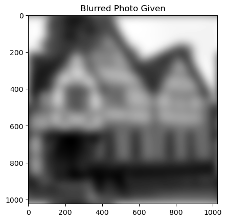
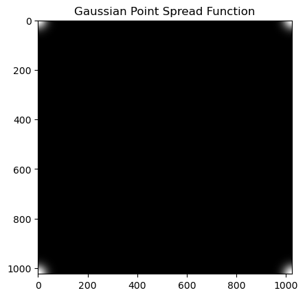
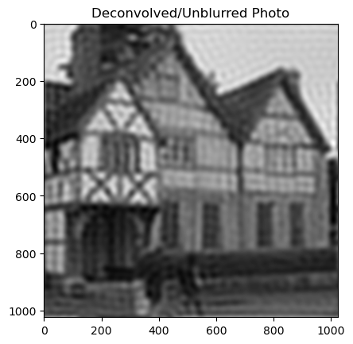
Research #
The method used above, sometimes called naive inverse filtering, is just one example of how an image can be deconvolved. In fact, there are two main classes of methods to deconvolve an image. Shown below are three different ways an image of an organ was deconvolved. In this figure, images C and D are deconvolved using iterative algorithms, while B is deconvolved using an inverse filter. Below, the differences between these will be discussed along with the code for some of these other ways to deconvolve an image.

Inverse Filters #
Inverse filters work in the frequency domain, meaning they will use Fourier transforms to change the image and PSF to frequency components and work with them in this form. They take the image and use the PSF to back-calculate what the original image looked like before blurring. They essentially take the inverse of the point spread function and apply this to the blurred image. Examples of inverse filters include Wiener Deconvolution, Tikhonov Filtering, Linear Least Squares, and of course our Naive Inverse Filtering. The downside to inverse filters is that they are often sensitive to noise or other factors. In the naive inverse filtering code above, we had to change many numbers to 1 to avoid dividing by 0, hence the reason we cannot fully deconvolve the image.
Iterative Deconvolution Algorithms #
Compared to inverse filters, iterative algorithms work by performing many iterations to achieve the final deconvolved image. Essentially, these algorithms work by taking the blurred image as the initial guess, blurring it using the PSF, comparing the new blurred image to the original blurred image, and updating the current estimate. It may seem surprising that we compare the guess to the blurred image, but this blurred image is the best guess we have as to what the original actually looked like. However, these algorithms are often slower and more computationally expensive simply because they require many iterations before convergence. Examples of iterative algorithms include the Richardson-Lucy, Jansson-van Cittert, Landweber, and Nonlinear Tikhonov-Miller algorithms.
Richardson-Lucy Algorithm #
The iterative formula for the Richardson-Lucy Algorithm is as follows:
$$\hat{u}^{(t+1)}=\hat{u}^{(t)}\cdot \left(\frac{d}{\hat{u}^{(t)}\ast P}\ast P^{\star}\right)$$where $\hat{u}^{(t)}$ is the current guess at time $t$, $d$ is the original blurred image, $P$ is the point spread function, $P^{\star}$ is the spatially flipped point spread function, and $\ast$ denotes convolution. As one can see, this algorithm modifies the current guess over time until it becomes closer and closer to an unblurred image.
Testing On The Provided Image #
Shown below is the Richardson-Lucy Algorithm tested on the image provided by Newmans textbook that was used above. However, this does not successfully unblur the image. This failure is due to a discrepancy in the coordinate alignment and boundary assumptions between the two approaches. For the Fast Fourier Transform (FFT) naive inverse filter, the point spread function (PSF) must be centered at the origin (0,0) and wrapped/mirrored around the edges to satisfy the periodic boundary conditions assumed by the Discrete Fourier Transform (DFT). In contrast, space-domain iterative algorithms like Richardson-Lucy (implemented using spatial or FFT-based convolution via SciPy) expect the PSF kernel to be centered in the array (i.e., at the center coordinate index). Passing the wrapped/corner-centered FFT PSF into the Richardson-Lucy algorithm results in coordinate shifting and boundary distortions, causing the reconstructed image to fail to align correctly. When the PSF is properly centered in the spatial domain, the Richardson-Lucy algorithm resolves the blur successfully, as demonstrated on the test image below.
View Source Code
from scipy import signal
#This is the richardson lucy algorithm for image deconvolution as shown above
def RichLucy(image,PSF,iterations):
PSF_star=np.flip(PSF) #Create P star by flipping along both axes
current_guess=image #u^(t)
for l in range(iterations):
c=signal.fftconvolve(current_guess,PSF,mode='same') #This is the denominator of the fraction where u^(t) is convolved with P
divide=image/c #d/(u^(t)*P)
nexts=signal.fftconvolve(divide,PSF_star,mode='same') #(d\u^t*P)*(P^*)
current_guess=current_guess*nexts #Final multiplication of u^t and everything else
return current_guess
#calls the function
unblur=RichLucy(blur,f_point,5)
pylab.imshow(unblur,cmap='gray') #plots image result
pylab.title("Algorithm Not Working")
pylab.show()
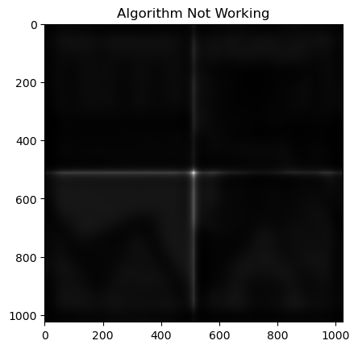
Implementing the Richardson-Lucy Algorithm #
The code below implements the Richardson-Lucy algorithm on a random image of a house I found online. I started by importing the image and then converting it to grayscale. From there, I artificially blurred the image using a Gaussian blur. I then extracted this kernel by applying the Gaussian blur to a zero matrix with a one in the middle. This creates the PSF and hence the algorithm is then able to be run. As seen below, one major drawback to the Richardson-Lucy algorithm, along with most deconvolution algorithms, is that they often darken the image. Therefore, after running the deconvolution I had to brighten the image using the PIL package. Finally, the different images are shown below. After just 10 iterations of the algorithm, results are able to be seen. However, while it is effective at unblurring, it also introduces artifacts into the image which is pretty obviously seen in the final result, especially near the edges. Also, this is still a really fast algorithm as running 1000 iterations only takes ~188 seconds. This is a relatively short time and it gives really good results as it unblurs the image completely and while it adds artifacts, all the details that were blurred are now brought out and easy to see!
View Source Code
import numpy as np
from scipy import signal
import pylab
import cv2
import time
from skimage import color, data, restoration
#Start timer to check runtime
start = time.time()
#Pulls in random house image
input_file_path='images\\image_house.jpg' #'house.png'
output_file_path='images\\output_image.jpg'
#Reads and prints the original image
image=cv2.imread(input_file_path)
pylab.imshow(image,cmap='gray')
pylab.title("Original Image")
pylab.show()
gray_image=cv2.cvtColor(image,cv2.COLOR_BGR2GRAY) #converts to grayscale
blurred_image=cv2.GaussianBlur(gray_image,(25,25),0) #(5,5) or (25,25) #blurs image using gaussian blur
pylab.imshow(blurred_image,cmap='gray')
pylab.title("Blurred Image")
pylab.show()
cv2.imwrite(output_file_path,blurred_image) #saves image
#Creates the gaussian blur PSF using the gaussian blur kernel
img=np.zeros((35,35)) #(7,7) or (35,35)
img[18,18]=1 #(3,3) or (18,18)
img1 = cv2.GaussianBlur(img, (25, 25), 0) #(5,5) or (25,25)
#calls the richardson lucy algorithm
unblur=RichLucy(blurred_image,img1,100)
pylab.imshow(unblur,cmap='gray')
pylab.title("Unbrightened Image After Deconvolution")
pylab.show()
cv2.imwrite('images\\file_out.jpg',unblur)
#brighten the image
from PIL import Image, ImageEnhance
img = Image.open("images\\file_out.jpg").convert("RGB")
img_enhancer = ImageEnhance.Brightness(img)
factor = 1
enhanced_output = img_enhancer.enhance(factor)
#Show the brightened image
pylab.imshow(enhanced_output,cmap='gray')
pylab.title("Brightened Image After Deconvolution")
pylab.show()
#End Timer and print time
end = time.time()
print(str(end - start)+" seconds elapsed.")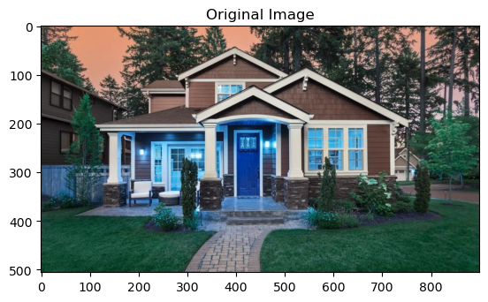
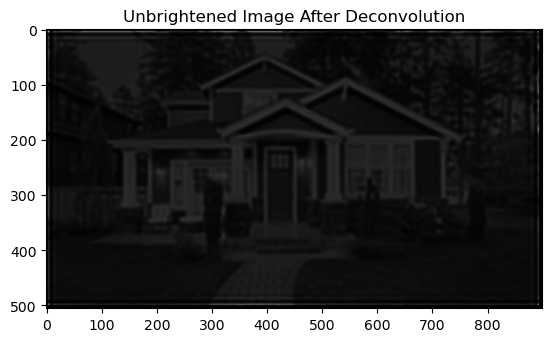
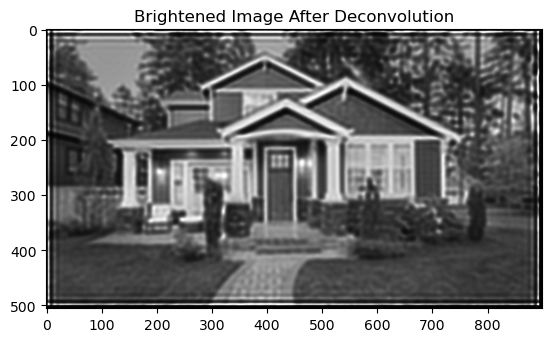
26.75157928466797 seconds elapsed.
Wiener Deconvolution #
Besides the Fourier series inverse filter and the Richardson-Lucy algorithm used above, there are a ton of different ways to deconvolve/unblur images. Shown in the picture at the beginning of the Research section are multiple ways to deconvolve fluorescent images used in biology. So, another example of an inverse filter deconvolution is the Wiener Deconvolution. This is a specific application of the Wiener filter to noisy, convolved images. This inverse filter is very mathematically complex and often has to make estimates on quantities on the images, such as their spectral content of the unblurred image. To use this algorithm, there is some system $y(t)=(h*x)(t)+n(t)$ where $x(t)$ is some original image and $h(t)$ is the PSF, $n(t)$ is some unknown additive noise, and $y(t)$ is our observed signal. The goal is find some $g(t)$ such that we can estimate $\hat{x}(t)=(g*y)(t)$ where $\hat{x}(t)$ minimizes the mean square error. Hence, the Wiener deconvolution filter provides this $g(t)$ in its Fourier transform according to the formula: $$G(f)=\frac{H^*(f)S(f)}{|H(f)|^2S(f)+N(f)}$$
Here $G(f)$ and $H(f)$ are the Fourier transforms of $g(t)$ and $h(t)$, $S(f)$ is the mean power spectral density of the original signal $x(t)$, $N(f)$ is the mean power spectral density of the noise $n(t)$, and the superscript $^*$ denotes the complex conjugation. As stated above, $S(f)$ and $N(f)$ are of course estimates as it is impossible to find these exact values for the original signal.
Implementation #
For the implementation of Wiener deconvolution, the module scikit-image was used as it comes with a prebuilt Wiener deconvolution function. Shown below, the same image of the house was imported, blurred using gaussian blur, noise was added, and deconvolved using the skimage function 'restoration.unsupervised_wiener'. This adds slight artifacts into the image but unblurs it successfully without the need to brighten the image at all. Along with that it is a very fast algorithm.
View Source Code
from skimage import color, data, restoration
from scipy.signal import convolve2d
from skimage import color, data, restoration
#Importing image and converting to grey using the color package (or else it wont work with other conversions)
image=cv2.imread(input_file_path)
img5=color.rgb2gray(image)
#Creating the PSF
img=np.zeros((35,35)) #(7,7) or (35,35) for more blur
img[18,18]=1 #(3,3) or (18,18) for more blur
img1 = cv2.GaussianBlur(img, (25,25), 0) #(5,5) or (25,25) for more blur
#Creating the blurred image
img = convolve2d(img5, img1, 'same')
#Adding noise
rng = np.random.default_rng()
img += 0.1 * img.std() * rng.standard_normal(img.shape)
#Deconvolving using Wiener
deconvolved_img,_ = restoration.unsupervised_wiener(img, img1)
#Showing the images
pylab.imshow(img5,cmap='gray')
pylab.title("Original Image")
pylab.show()
pylab.imshow(img,cmap='gray')
pylab.title("Blurred Image")
pylab.show()
pylab.imshow(deconvolved_img,cmap='gray')
pylab.title("Unblurred Image")
pylab.show()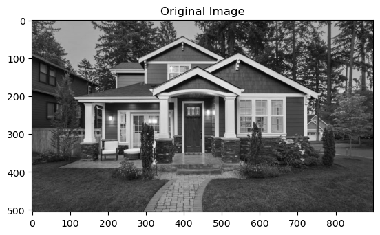
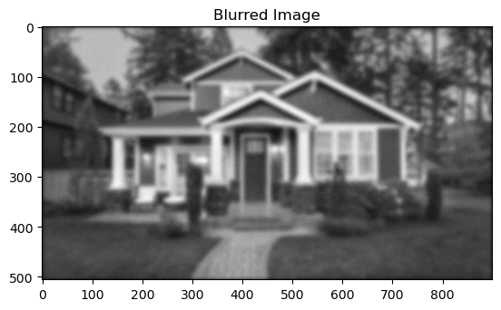
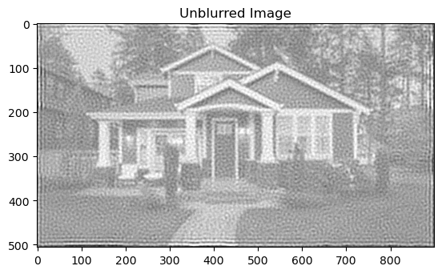
Deep Learning Model #
After showing three different ways to deconvolve a blurred image above, thoughts of applications come to mind. Applications to biology were already discussed above along with common day applications such as blurred family photos or even blurred videos. However, one area this may be applied is in the Deep Learning field. Firstly, deep learning is a sub-field of machine learning. Machine learning focuses on developing algorithms that can learn and make decisions based on data given to the model. Specifically, machine learning models used in data analysis have two primary applications of classification and regression. In regression, models predict numerical values based on a set of input labels, such as the price of a house based on all of its details after being trained on a large dataset of housing prices. In classification, models predict the category the new data/observation falls into. Both of these are very important tools as they allow humans to predict the outcome of new observations. Now, deep learning simply takes these same principles and uses artificial neural networks to attack these similar problems. It uses multi-layered neural networks that learn and extract higher-level features from data. So, while machine learning algorithms still have applications, deep learning neural networks are where most of today's models and research come from.
These neural networks are often used in image classification. Think of filling out a reCAPTCHA for Google to prove you are not a robot. While this helps them mitigate bots, it also provides them with labeled data of image classification that they can then use to train large-scale neural networks. Now, speaking of large models, I really mean large models. Google's newest natural language processing neural network model, T5, has 11 billion parameters and costs \$1.3 million USD to train just once! This cost is coming from the time and power used to train this model as it analyzes over 3.5 billion words. Now, this neural network is very complicated and its architecture is extremely important. Obviously this is a very important field, hence the fact I wanted to apply this image deconvolution to it in any way I can.
The Idea #
A very simple first example of a binary classification neural network is its ability to classify pictures of cats and dogs. This is a very simple problem, and a simple neural network can solve this with almost 100\% accuracy! So, when using neural networks at a smaller scale, instead of building our own, we often import a pre-built model and then train it on the data we are using. Down below, MobileNetV2 is used and it is a convolutional neural network (CNN) that has 53 layers and is pretrained to classify images into 1000 different object categories. It has a very low computational cost and is made for computers or mobile devices with low computational power, hence its use in this project.
How accurately does this model classify images of cats and dogs when these images are blurred? More importantly, how well does it classify them once they are unblurred using a deconvolutional algorithm such as the Richardson-Lucy algorithm? This is the question I wanted to answer because it merges these two fields of image deconvolution and deep learning.
Implementation #
To implement this idea is much harder than it sounds. First, the dog and cat images must be unzipped and loaded into an accessible directory. This dataset includes 1000 training images for both cats and dogs, and 500 testing/validation images for both cats and dogs. These are pre-separated into different folders in the directory. Now, since we plan on running this model on both the blurred and unblurred images, some code is commented out and the entire code needs to be run twice. So, next a loop is run to iterate over the 500 testing images. In this loop, each image is blurred using a Gaussian blur function and unblurred if needed. From there, these images are written to the same folder. This is done for both the cat and dog images. Next, data augmentation occurs, meaning the images are run through an image data generator. This modifies the images by rescaling, rotating, shifting, cropping, flipping, zooming, etc. This allows the model to be trained and tested on a much larger dataset, which is often used in deep learning. Next, the model is imported and a final single-node layer is added to allow for binary classification. Finally, the model was compiled and fit to the test data. Early stopping is used, meaning that once the validation loss no longer improves with each cycle, it stops training to avoid overfitting. The code is fully commented with some cells/code only being used depending on whether you are running on blurred or unblurred photos. The results are shown and discussed below.
View Source Code
#Import all necessary packages
import os
import numpy as np
import matplotlib.pyplot as plt
import tensorflow as tf
from tensorflow.keras.preprocessing.image import ImageDataGenerator
from tensorflow.keras.applications import MobileNetV2
from tensorflow.keras.layers import Dense, GlobalAveragePooling2D
from tensorflow.keras.models import Model
from tensorflow.keras.optimizers import Adam
from tensorflow.keras.callbacks import EarlyStopping
import cv2
from scipy import signal
import pylab
import time
import zipfileView Source Code
# Define the base directory relative to the current working directory
base_dir = os.getcwd() # This gets the current working directory (FinalProject)
# Unzips the files into the correct directory
zip_file_path = os.path.join(base_dir, 'images//cats_and_dogs_filtered.zip')
extract_dir = base_dir # Unzip in the current directory (FinalProject)
with zipfile.ZipFile(zip_file_path, 'r') as zip_ref:
zip_ref.extractall(extract_dir)
# Set up directories for training and validation sets
train_dir = os.path.join(base_dir, 'images//cats_and_dogs_filtered', 'train')
validation_dir = os.path.join(base_dir, 'images//cats_and_dogs_filtered', 'validation')
# Optional: Create directories if they don't exist
os.makedirs(train_dir, exist_ok=True)
os.makedirs(validation_dir, exist_ok=True)View Source Code
#This is the richardson lucy algorithm for image deconvolution as shown above
def RichLucy(image,PSF,iterations):
PSF_star=np.flip(PSF) #Create P star by flipping along both axes
current_guess=image #u^(t)
for l in range(iterations):
c=signal.fftconvolve(current_guess,PSF,mode='same') #This is the denominator of the fraction where u^(t) is convolved with P
divide=image/c #d/(u^(t)*P)
nexts=signal.fftconvolve(divide,PSF_star,mode='same') #(d\u^t*P)*(P^*)
current_guess=current_guess*nexts #Final multiplication of u^t and everything else
return current_guess
View Source Code
### This cell blurs and unblurs the 500 testing dog images ###
#Start timer to check runtime
start = time.time()
#Creates the gaussian blur PSF using the gaussian blur kernel
img=np.zeros((35,35)) #(7,7) or (35,35)
img[18,18]=1 #(3,3) or (18,18)
img1 = cv2.GaussianBlur(img, (25, 25), 0) #(5,5) or (25,25)
#Iterates over the file names
for i in range(2000,2500):
image_dir=r"images\\cats_and_dogs_filtered\validation\dogs\dog."+str(i)+".jpg"
image=cv2.imread(image_dir)
gray_image=cv2.cvtColor(image,cv2.COLOR_BGR2GRAY) #converts to grayscale
blurred_image=cv2.GaussianBlur(gray_image,(25,25),0) #(5,5) or (25,25) #blurs image using gaussian blur
### This code saves the blurred images. If testing on the unblurred images, comment out this section ###
#cv2.imwrite(image_dir, blurred_image)
### This section unblurs the images. If testing on blurred images, comment out this section ###
#calls the richardson lucy algorithm
unblur=RichLucy(blurred_image,img1,20)
cv2.imwrite('images\\file_out.jpg',unblur)
#brighten the image
from PIL import Image, ImageEnhance
img = Image.open("images\\file_out.jpg").convert("RGB")
img_enhancer = ImageEnhance.Brightness(img)
factor = 1
enhanced_output = img_enhancer.enhance(factor)
enhanced_output=np.array(enhanced_output)
cv2.imwrite(image_dir, enhanced_output)
#End Timer and print time
end = time.time()
print(str(end - start)+" seconds elapsed.")View Source Code
### This cell blurs and unblurs the 500 testing cat images ###
#Start timer to check runtime
start = time.time()
#Creates the gaussian blur PSF using the gaussian blur kernel
img=np.zeros((35,35)) #(7,7) or (35,35)
img[18,18]=1 #(3,3) or (18,18)
img1 = cv2.GaussianBlur(img, (25, 25), 0) #(5,5) or (25,25)
#Iterates over the testing image names
for i in range(2000,2500):
image_dir=r"images\\cats_and_dogs_filtered\validation\cats\cat."+str(i)+".jpg"
image=cv2.imread(image_dir)
gray_image=cv2.cvtColor(image,cv2.COLOR_BGR2GRAY) #converts to grayscale
blurred_image=cv2.GaussianBlur(gray_image,(25,25),0) #(5,5) or (25,25) #blurs image using gaussian blur
### This code saves the blurred images. If testing on the unblurred images, comment out this section ###
#cv2.imwrite(image_dir, blurred_image)
### This section unblurs the images. If testing on blurred images, comment out this section ###
#calls the richardson lucy algorithm
unblur=RichLucy(blurred_image,img1,20)
cv2.imwrite('images\\file_out.jpg',unblur)
#brighten the image
from PIL import Image, ImageEnhance
img = Image.open("images\\file_out.jpg").convert("RGB")
img_enhancer = ImageEnhance.Brightness(img)
factor = 1
enhanced_output = img_enhancer.enhance(factor)
enhanced_output=np.array(enhanced_output)
cv2.imwrite(image_dir, enhanced_output)
#End Timer and print time
end = time.time()
print(str(end - start)+" seconds elapsed.")View Source Code
### This cell augments the data, increasing the number of training and testing images so that the model can be more effective ###
#Start timer to check runtime
start = time.time()
# Data preprocessing and augmentation
IMAGE_SIZE = 224
BATCH_SIZE = 32
# Data generator for training set with data augmentation
train_datagen = ImageDataGenerator(
rescale=1./255,
rotation_range=40,
width_shift_range=0.2,
height_shift_range=0.2,
shear_range=0.2,
zoom_range=0.2,
horizontal_flip=True,
fill_mode='nearest'
)
# Data generator for validation and test sets without data augmentation
test_datagen = ImageDataGenerator(rescale=1./255)
train_generator = train_datagen.flow_from_directory(
train_dir,
target_size=(IMAGE_SIZE, IMAGE_SIZE),
batch_size=BATCH_SIZE,
class_mode='binary'
)
validation_generator = test_datagen.flow_from_directory(
validation_dir,
target_size=(IMAGE_SIZE, IMAGE_SIZE),
batch_size=BATCH_SIZE,
class_mode='binary'
)
# Load the pre-trained MobileNetV2 model without the top classification layer
base_model = MobileNetV2(input_shape=(IMAGE_SIZE, IMAGE_SIZE, 3), include_top=False,
weights='imagenet')
# Set base model layers as non-trainable
for layer in base_model.layers:
layer.trainable = False
# Create custom classification layer
x = base_model.output
x = GlobalAveragePooling2D()(x)
x = Dense(1, activation='sigmoid')(x)
#End Timer and print time
end = time.time()
print(str(end - start)+" seconds elapsed.")View Source Code
### This cell compiles and tests the model with early stopping ###
#Start timer to check runtime
start = time.time()
# Create the final model
model = Model(inputs=base_model.input, outputs=x)
# Compile the model
model.compile(optimizer=Adam(lr=0.001), loss='binary_crossentropy', metrics=['accuracy'])
# Train the model
EPOCHS = 10
early_stopping = EarlyStopping(monitor='val_loss', patience=2, verbose=1)
history = model.fit(
train_generator,
steps_per_epoch=len(train_generator),
epochs=EPOCHS,
validation_data=validation_generator,
validation_steps=len(validation_generator),
callbacks=[early_stopping]
)
# Save the model
model.save("cats_dogs_transfer_learning.h5")
# Evaluate the model on the test set
test_generator = test_datagen.flow_from_directory(
validation_dir,
target_size=(IMAGE_SIZE, IMAGE_SIZE),
batch_size=BATCH_SIZE,
class_mode='binary'
)
#Print the loss and accuracy
test_loss, test_acc = model.evaluate(test_generator, steps=len(test_generator))
print(f'Test accuracy: {test_acc}, Test loss: {test_loss}')
#End Timer and print time
end = time.time()
print(str(end - start)+" seconds elapsed.")View Source Code
# ### This section prints out the graphs when tested on blurred images. If testing on unblurred images, comment out. ###
# #Start timer to check runtime
# start = time.time()
# # Plot the training and validation accuracy and loss
# acc = history.history['accuracy']
# val_acc = history.history['val_accuracy']
# loss = history.history['loss']
# val_loss = history.history['val_loss']
# epochs_range = range(len(acc))
# plt.figure(figsize=(12, 6))
# plt.subplot(1, 2, 1)
# plt.plot(epochs_range, acc, label='Training Accuracy')
# plt.plot(epochs_range, val_acc, label='Validation Accuracy')
# plt.xlabel('Epochs')
# plt.ylabel('Accuracy')
# plt.legend(loc='lower right')
# plt.title('Training and Validation Accuracy On Blurred Images')
# plt.subplot(1, 2, 2)
# plt.plot(epochs_range, loss, label='Training Loss')
# plt.plot(epochs_range, val_loss, label='Validation Loss')
# plt.xlabel('Epochs')
# plt.ylabel('Loss')
# plt.legend(loc='upper right')
# plt.title('Training and Validation Loss on Blurred Images')
# plt.show()
# # Show example predictions
# test_image_batch, test_label_batch = next(iter(test_generator))
# predicted_batch = model.predict(test_image_batch)
# predicted_batch = np.where(predicted_batch >= 0.5, 1, 0)
# predicted_ids = np.squeeze(predicted_batch)
# class_names = ['cat', 'dog']
# fig = plt.figure(figsize=(12, 12))
# for i in range(9):
# plt.subplot(3, 3, i + 1)
# plt.imshow(test_image_batch[i])
# plt.title(f"Actual: {class_names[int(test_label_batch[i])]}, Predicted: {class_names[predicted_ids[i]]}")
# plt.axis('off')
# plt.tight_layout()
# plt.show()
# #End Timer and print time
# end = time.time()
# print(str(end - start)+" seconds elapsed.")View Source Code
### This section prints out the graphs when tested on blurred images. If testing on blurred images, comment out. ###
#Start timer to check runtime
start = time.time()
# Plot the training and validation accuracy and loss
acc = history.history['accuracy']
val_acc = history.history['val_accuracy']
loss = history.history['loss']
val_loss = history.history['val_loss']
epochs_range = range(len(acc))
plt.figure(figsize=(12, 6))
plt.subplot(1, 2, 1)
plt.plot(epochs_range, acc, label='Training Accuracy')
plt.plot(epochs_range, val_acc, label='Validation Accuracy')
plt.xlabel('Epochs')
plt.ylabel('Accuracy')
plt.legend(loc='lower right')
plt.title('Training and Validation Accuracy On Unblurred Images')
plt.subplot(1, 2, 2)
plt.plot(epochs_range, loss, label='Training Loss')
plt.plot(epochs_range, val_loss, label='Validation Loss')
plt.xlabel('Epochs')
plt.ylabel('Loss')
plt.legend(loc='upper right')
plt.title('Training and Validation Loss on Unblurred Images')
plt.show()
# Show example predictions
test_image_batch, test_label_batch = next(iter(test_generator))
predicted_batch = model.predict(test_image_batch)
predicted_batch = np.where(predicted_batch >= 0.5, 1, 0)
predicted_ids = np.squeeze(predicted_batch)
class_names = ['cat', 'dog']
fig = plt.figure(figsize=(12, 12))
for i in range(9):
plt.subplot(3, 3, i + 1)
plt.imshow(test_image_batch[i])
plt.title(f"Actual: {class_names[int(test_label_batch[i])]}, Predicted: {class_names[predicted_ids[i]]}")
plt.axis('off')
plt.tight_layout()
plt.show()
#End Timer and print time
end = time.time()
print(str(end - start)+" seconds elapsed.")Results #
Shown above are the results of the model on the two data sets of blurred and unblurred photos. Along with that, random photos are picked and shown above along with the prediction by the model, just for reference. Now, due to the time commitment it takes to train the model and then evaluate it, the graphs for the accuracy and loss are shown below:
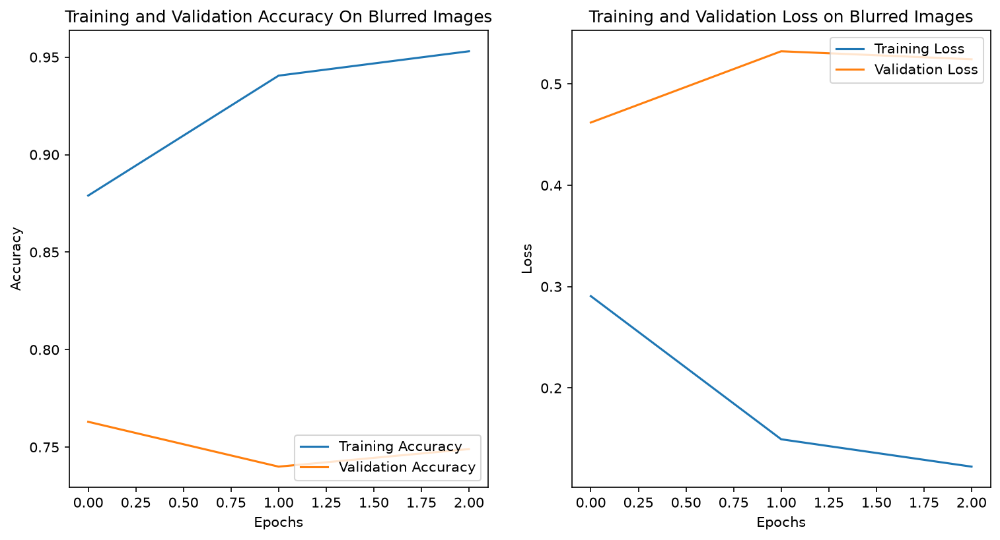
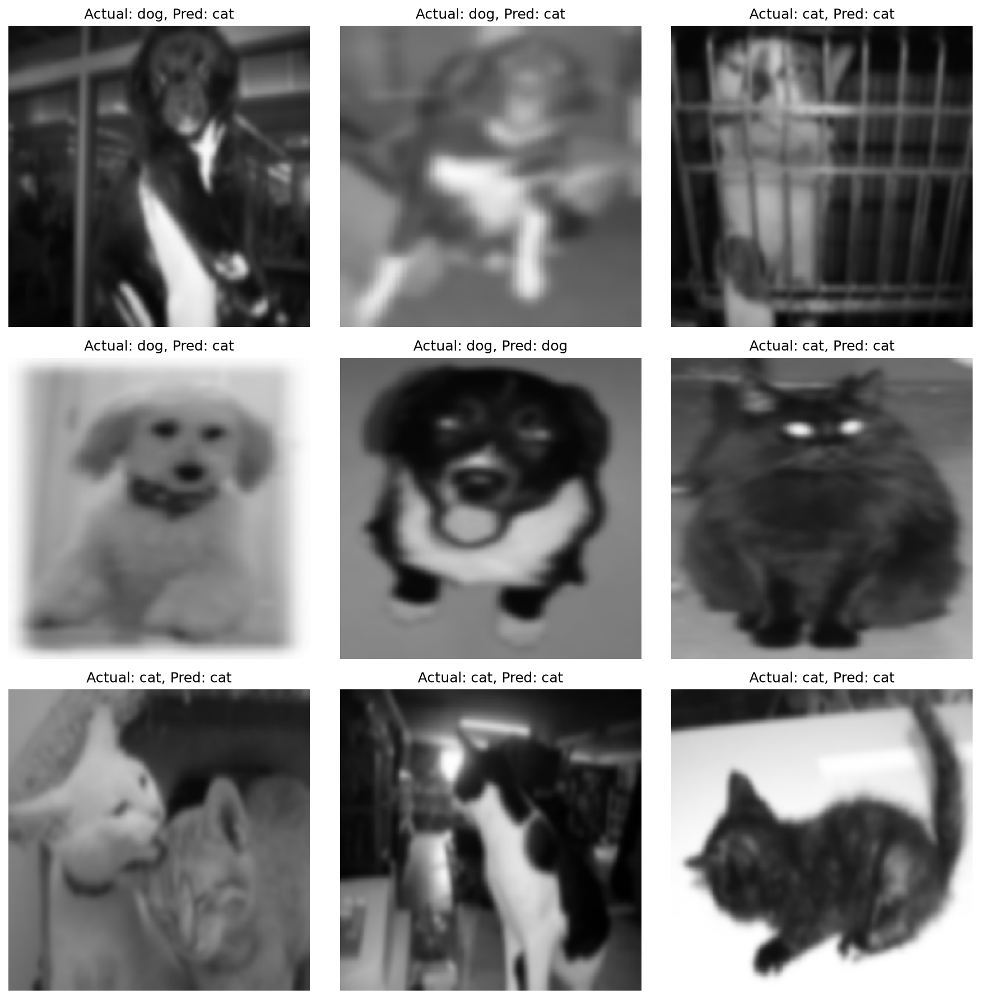
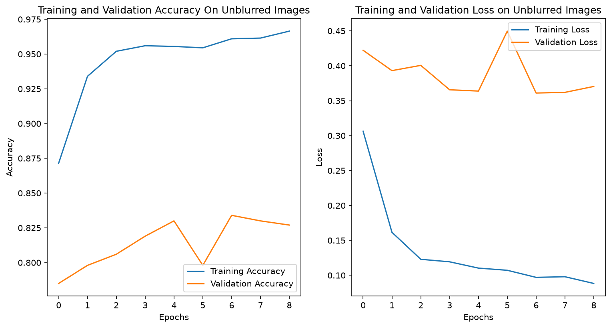
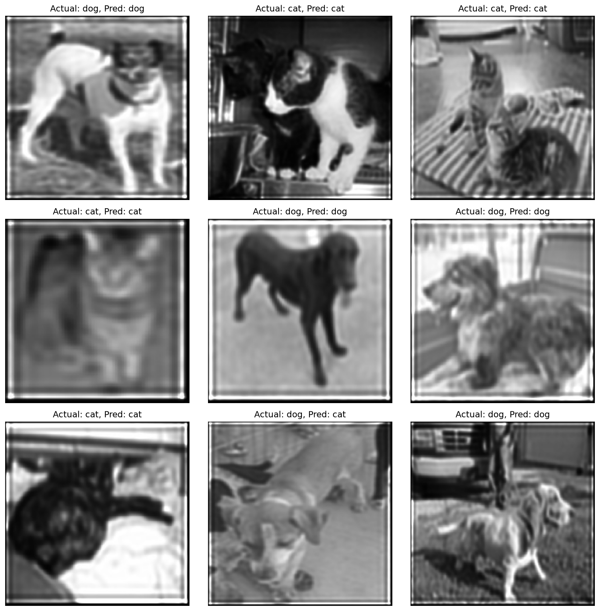
First, in the accuracy graphs we see that the training accuracy is almost 100% because the model was trained on normal photos of cats and dogs rather than the blurred/unblurred ones the model was tested on. So, obviously, we will see a large difference between the validation and training accuracy. Next, loss is calculated using binary cross-entropy, measuring the discrepancy between predicted probabilities and actual labels, while accuracy measures the percentage of correct classifications. Although they are mathematically different, they share an inverse relationship: as the model trains, the loss decreases and the accuracy increases. Finally, we see that early stopping occurs in both the blurred and unblurred trials at epoch 9 (out of 10 maximum epochs). The early stopping callback monitors validation loss and stops training once the validation loss stabilizes, which effectively prevents the model from overfitting to the training data.
Comparing the two sets of graphs, between the model being tested on the blurred vs. unblurred photos we see that the model performed better on the unblurred photos as expected. This makes logical sense as it is able to recognize whether the photo is a dog or cat easier when it is unblurred. However, it increased the validation accuracy from 74.9% (~75%) on blurred images to 82.7% (~83%) on deconvolved images when we unblurred the photos using the Richardson-Lucy algorithm. While this is better, meaning the unblurring algorithm has real effects on the image, it is still far off from the training accuracy on normal images. So, while this is exciting to see that the unblurring can be used in other fields to increase performance, it did not improve it by a significant amount.
Future Work #
The next logical question to ask is how do other deconvolution algorithms compare in their ability to increase the accuracy of the neural network. So, we could unblur the images using the first inverse filter or Wiener deconvolution and compare how they increase the accuracy. This could be a good test to determine which deconvolution works best or it could depend on the type of problem. Maybe some deconvolution ideas work best on the classification of 2 image types while others work on classification of 10 image types. There are so many possibilities of questions to ask and this intersection of fields is truly amazing!
References #
- Stack Overflow, https://stackoverflow.com/.
- “Scipy Documentation.” SciPy Documentation - SciPy v1.10.1 Manual, https://docs.scipy.org/doc/scipy/index.html.
- Bouchard, Ellen. “Image Deconvolution: What It Is and How to Use It for Microscopy.” Biodock, Biodock, 29 Sept. 2021, https://blog.biodock.ai/image-deconvolution/.
- Wallace, Wes. “Algorithms for Deconvolution Microscopy.” Digital Image Processing - Algorithms for Deconvolution Microscopy | Olympus LS, Olympus Life Science Primer
- “Wiener Deconvolution.” Wikipedia, Wikimedia Foundation, https://en.wikipedia.org/wiki/Wiener_deconvolution.
- “Blind Deconvolution.” Wikipedia, Wikimedia Foundation, https://en.wikipedia.org/wiki/Blind_deconvolution.
- “Richardson–Lucy Deconvolution.” Wikipedia, Wikimedia Foundation, https://en.wikipedia.org/wiki/Richardson%E2%80%93Lucy_deconvolution.
- “AI21 Labs Asks: How Much Does It Cost to Train NLP Models?” Synced, 30 Apr. 2020, https://syncedreview.com/2020/04/30/ai21-labs-asks-how-much-does-it-cost-to-train-nlp-models/.
- “Scikit-Image Documentation.” Scikit-Image, https://scikit-image.org/.